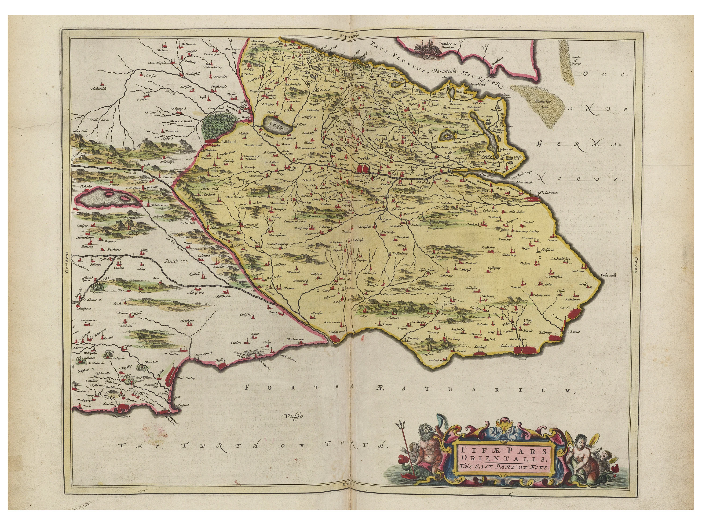

Nascimento
Adam Smith nasceu em 5 de junho de 1723, na pequena cidade portuária de Kirkcaldy, situada no condado de Fife, na Escócia. Filho de uma família modesta, cresceu em um ambiente que, embora simples, favoreceu sua educação e o contato com ideias que mais tarde moldariam sua obra. A proximidade com o comércio marítimo e a vida econômica local exerceu forte influência em sua percepção sobre os mecanismos do mercado, que se tornariam fundamentais para o desenvolvimento de suas teorias.
